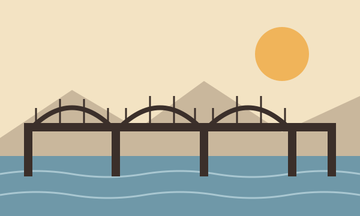

Después de tres años de obras, los vecinos pudieron cruzar de nuevo el puente de hierro.
Los comerciantes de la plaza dicen que el precio subió un 8 %.
El barrio estrena un parque con juegos para niños, canchas y más de cien árboles sembrados por los propios vecinos.
Este sábado llegan agricultores de la región con frutas, quesos y verduras a precios de finca.
Soleado en la mañana y lluvias en la tarde.
«Lo que se construye con paciencia, dura.»
Farmacia Central y Droguería del Río atienden las 24 horas esta semana.
Más bicicletas y menos humo. La ciudad es plana y perfecta para pedalear.